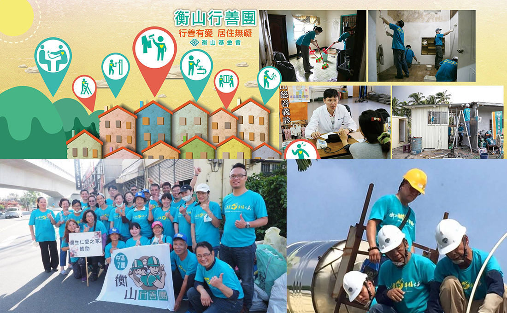

行善團主力-修繕整理
身心障礙者/中低收入戶，容易因年事已高、行動不便或維持家計而無力打理居家環境，髒亂破損的處所、長年漏水的房屋、傾斜崩壞的土角厝，不是你我能夠想像的。家本該是一處避風港，如今卻無法抵擋寒風、豪雨的侵襲，許多案家只能蜷縮在屋角，令人心疼不已。衡山行善團於2014年5月1日正式成立，針對身心障礙弱勢家庭的需求，於家訪評估後出團，改善案家居住品質、物資的補給，幫助他們走出人生中的困境，擁有一個安全的家。
身心障礙者/中低收入戶，容易因年事已高、行動不便或維持家計而無力打理居家環境，髒亂破損的處所、長年漏水的房屋、傾斜崩壞的土角厝，不是你我能夠想像的。家本該是一處避風港，如今卻無法抵擋寒風、豪雨的侵襲，許多案家只能蜷縮在屋角，令人心疼不已。衡山行善團於2014年5月1日正式成立，針對身心障礙弱勢家庭的需求，於家訪評估後出團，改善案家居住品質、物資的補給，幫助他們走出人生中的困境，擁有一個安全的家。